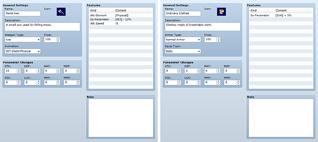

This data is for the weapons and armor that actors equip. It allows you to raise/lower specific parameters or assign specific abilities to the actor that equips them.

The name of the weapon or armor. If the name you enter is too long, the entire string may not fit onscreen.
The icon that displays along with the weapon/armor name during the game. Double-clicking it displays the Icon window where you can specify an image.
Descriptive text that appears when the player selects the weapon/armor on the game screen.
The type of the weapon or armor. Sets the actor and class characteristics for the weapon and armor, enabling you to define who can equip it. You can set/change the types of weapons/armor that can be selected on the Terms tab.
Specifies where the weapon/armor is equipped (shield/head/body/accessory). Actors can equip one piece of armor in the slot matching the armor's equipment type.
The weapon/armor's price when purchased at a shop. The player can sell it for half this price. Setting "0" prevents it from being sold.
The value(s) applied to the parameters of the equipping actor. Max HP and Max MP can be specified between -5000 and 5000, while the rest are between -500 and 500. Setting a negative value causes the affected parameters to go down.
The features to apply to the equipping actor. Define them in the window that appears when you double-click each line in the Features box. See Setting Features for more information.